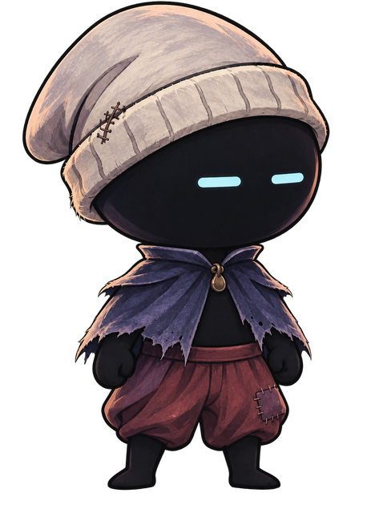

Cowl and the Buried Mansion
Every world asset the game needs to look like your mockups, sized to the level as built, and Cowl's animations to a grounded, top-tier standard. Copy-ready prompts for GPT-6 SOL: the parallax, the floors, walls, ceilings and stairs, every piece of furniture you climb, the doors and machines, the room plates at full resolution, and Cowl's run, jump, idle, smoke breaks and bare-handed fighting.
Your direction
| You said | What this book does | Cards |
|---|---|---|
| The world assets for the game: the parallax, the staircases, the floor tiles, everything like in the mockups | Every piece the game's art pass still draws as flat ink, at the exact size the level uses: three parallax layers and the flooded vaults, floor tops, ceilings with hanging moss, wall faces, corners, doorways and floor holes, the grand stair kit and its iron railings, piers, vault ribs, windows, a back wall for every kind of room, every piece of furniture you climb at its collision size, the doors, lifts, levers and root locks, candelabra, moss and wear, and the nine room plates repainted at twice the size. It starts with SOL repainting two real screenshots of the game, so the look is locked on the level itself. | W0–W47 |
| Too cartoony, not AAA top tier | The standard is now grounded and weighty: real body mechanics, limbs that keep their length, no comic gags, and Cowl painted with the same form shading and texture as the mansion paintings. The checks reject rubbery sheets. | The standard |
| Lean forward when he runs, like that famous ninja run | Torso about 45° forward and held, his head leading past his knees, both arms swept straight back, real weight in every footfall. A start, a braking skid and a turn. | H12, H13 |
| A jump that looks cool | An explosive take-off, a tight athletic forward flip at the top of a full jump, then he opens out and hangs at the apex. A short hop skips the flip. Big drops end in a three-point landing that absorbs the fall. | H14, H15 |
| An idle where he sways and bobs | Sixteen drawings of him nodding to music only he hears: two sways, each a little different, and one slow blink. | H4 |
| After chilling, he pulls out a blunt or a bong | Both, picked at random after about eight seconds, played calm and unhurried. The blunt comes out of his beanie's cuff; the small bong from inside its slouch, and he crouches to use it. Afterwards a slower, half-lidded idle until you move him, and any input brings him straight back. | H6–H11, H5, F4 |
| No weapon at the start: a cool 1-2 punch and a kick | A sharp jab and a cross with his whole body behind it, chained into a spinning back kick where he spots the target over his shoulder, and a flying kick in the air. A flare on his fist or foot in his eye colour, and knuckle soot on each hit, make his bare charcoal hands read against any wall. | H16–H20, F1, F2, F5 |
| Expand on the look | Your mockup stays canon. H0 turns it to the game's side view, paints it to sit in the mansion, and tests how he reads against its walls. | H0, H1 |
The smoke breaks show drug use on screen. Expect a "Use of Drugs" descriptor from the age-rating boards and on store pages, which usually means a teen-or-older rating.
Cowl's look
Kept from your mockup
- The near-black body with no mouth, nose or ears.
- Two glowing pale cyan slit eyes, set wide.
- The oversized worn wool beanie, cuff pulled low, with its stitched repair, at its drawn length.
- The tattered indigo cape with its brass clasp.
- Baggy wine-red trousers with a sash and a plum patch; bare hands and feet.
- Big-head proportions: the head and beanie are half his height.
Added for the game, without changing his design
- Painted like the world. Your new mockup already is: worn wool, torn cloth and soft form shading, the same rendering as the mansion paintings. Every card keeps it.
- A three-quarter head in side view, so both eyes always show. They are his whole face.
- Eight eye states (H2): the same two slits narrowing, widening, dimming and closing. No cartoon symbols.
- Strike flares in his eye colour (F5), so his bare fists read against any wall.
- Soot as his signature. His dust, landings, knuckle hits, death and return are all made of him.
- Body
#15151C - Beanie
#CFBBB3 - Beanie shadow
#74626B - Cape
#3B3854 - Cape light
#5A537A - Clasp
#815F49 - Trousers
#602F37 - Patch
#5E384A - Eyes
#BEEEF5
The world in the game
The game your other session built lays its art over the collision in layers (game/level/level_art.gd). Today most of it is flat ink and lines drawn in code, set around nine plates cut from your mockups. This table is every layer, what it draws now, and the cards that replace it. The camera shows about 30 × 17 tiles of 64 px, zooming out to 0.68 in the grand hall.
| Layer, far to near | What the game draws now | Replaced by |
|---|---|---|
| Parallax, at 0.10, 0.24 and 0.46 of the camera | Three code-drawn arcades, faded | W3, W4, W5; the undercroft W6 |
| Back walls, by room mood | A flat gradient with lines for courses, pipes, beams, panels or glazing | W18–W25 |
| Windows and shelves on the back walls | Code-drawn lancets every 7 tiles; rectangles for books | W17, W20 |
| Painted plates | Nine cuts from your mockups at their original size | W40–W47 (the green door: W33) |
| Piers | Code-drawn shafts in the hall, undercroft, library and towers | W15 |
| Railings and candlesticks | Thin ink rails along stairs and galleries; ink candelabra | W14, W35, W36 |
| The solid mass | Flat ink with a lit line on floors and a faint one on walls; stair treads as a line | W7–W13 |
| Furniture you climb | Flat ink blocks | W26–W29 |
| Vault shoulders and ribs | Ink quarter-arches in room corners, pendants on wide ceilings | W16 |
| Doors, lifts, levers, locks, pickups | Ink shapes in each script in game/world/ | W30–W34 |
| Hanging moss, in front of Cowl | Ink drips under every ceiling | W9, W37, W38 |
| Haze, dust and vignette | Code: a gradient and particles | Stays code (it already matches) |
Three rules for every world card
- The collision is the layout. Every floor, wall and ceiling line sits exactly where the level puts it, perfectly straight. Art hangs past a ceiling but never rises above a floor.
- Values: the walls behind the playfield stay mid-violet so Cowl's charcoal body reads in front; only the earth and the foreground go near-black.
- Reserved colours: red, pale cyan and pure white belong to Cowl. Arcane green only on the sealed doors; a thin cyan trace only in the lab.
The space is still moving
- The tiling pieces (floors, ceilings, walls, stairs, railings, back walls) fit any shape the blockout takes.
- The furniture pieces are drawn to their current collision boxes. If a box changes size, the piece can be stretched a little or redrawn from its card.
- The two target renders repaint screenshots of the level as built today.
- Earth
#07081A - Darks
#151834 - Shadow
#25254B - Mid stone
#373869 - Lit stone
#524D88 - Haze
#6B609E - Plum velvet
#5E4182 - Candle
#E6A8B2 - Sealed door
#BFCD5B - Water
#566FA5
The cards
| Card | What | Sheet | Timing |
|---|---|---|---|
| The look | |||
H0 | Look development: your mockup in the game's side view make first | 8 cells | |
H1 | Model sheet make first | 8 cells | |
H2 | Eyes and body language | 8 cells | |
H3 | Key poses make first | 8 cells | |
| The idle and the smoke breaks | |||
H4 | Idle: the sway and bob (loop) make first | 16 drawings | 154 ticks (2.57 s) |
H5 | Chilled idle (loop): after the smoke | 12 drawings | 144 ticks (2.40 s) |
H6 | Blunt break 1: lighting up | 16 drawings | 128 ticks (2.13 s) |
H7 | Blunt break 2: smoking (loop) | 12 drawings | 126 ticks (2.10 s) |
H8 | Blunt break 3: put it out and stash it | 12 drawings | 87 ticks (1.45 s) |
H9 | Bong break 1: the hit | 16 drawings | 106 ticks (1.77 s) |
H10 | Bong break 2: the exhale | 16 drawings | 109 ticks (1.82 s) |
H11 | Snap out of it | 12 drawings | 28 ticks (0.47 s) |
| The run and the jump | |||
H12 | The ninja run (loop) make first | 12 drawings | 36 ticks (0.60 s) |
H13 | Run: start, skid stop and turn | 16 drawings | 38 ticks (0.63 s) |
H14 | The jump: take-off, the flip and the apex make first | 16 drawings | 40 ticks (0.67 s) |
H15 | Falling, and two landings | 16 drawings | 63 ticks (1.05 s) |
| The 1-2 and the kick | |||
H16 | Punch 1: the jab make first | 12 drawings | 21 ticks (0.35 s) |
H17 | Punch 2: the cross | 12 drawings | 22 ticks (0.37 s) |
H18 | The kick: spinning back kick (finisher) | 16 drawings | 37 ticks (0.62 s) |
H19 | Into and out of the string | 12 drawings | 39 ticks (0.65 s) |
H20 | Air attack: the flying kick | 12 drawings | 27 ticks (0.45 s) |
F1 | Effects: punch and kick trails | 12 drawings | 25 ticks (0.42 s) |
F2 | Effects: hit sparks | 12 drawings | 30 ticks (0.50 s) |
F5 | Effects: fist and foot flares, and knuckle soot | 12 drawings | 25 ticks (0.42 s) |
| Everything else he does | |||
H21 | Hurt, and knocked down | 16 drawings | 64 ticks (1.07 s) |
H22 | Death, and reforming from soot | 16 drawings | 105 ticks (1.75 s) |
H23 | Wall grip, slide and wall jump | 12 drawings | 36 ticks (0.60 s) |
H24 | The dive stomp | 12 drawings | 43 ticks (0.72 s) |
H25 | Rig parts for the game's cut-out rig | 8 cells | |
F3 | Effects: soot | 16 drawings | 51 ticks (0.85 s) |
| The idle and the smoke breaks | |||
F4 | Effects: smoke and the lighter flame | 16 drawings | 112 ticks (1.87 s) |
| Lock the world's look on real screens | |||
W0 | Target render: Cowl's bedroom, repainted make first | 1 image | |
W1 | Target render: the grand entrance hall, repainted make first | 1 image | |
W2 | Materials sheet | 8 cells | |
| Parallax | |||
W3 | Parallax 1: the far arcades | 1 image | |
W4 | Parallax 2: the middle galleries | 1 image | |
W5 | Parallax 3: the near arcade | 1 image | |
W6 | Parallax: the flooded vaults (the undercroft) | 1 image | |
| Floors, ceilings, walls and stairs | |||
W7 | Earth fill (seamless) | 1 image | |
W8 | Floor tops | 4 strips | |
W9 | Ceilings and hanging moss | 4 strips | |
W10 | Wall faces | 4 strips | |
W11 | Corners and ledge ends | 8 cells | |
W12 | Doorways, breaches and floor holes | 8 cells | |
W13 | Stairs: the grand stair kit | 8 cells | |
W14 | Railings and balustrades | 8 cells | |
| Piers, vaults and windows | |||
W15 | Piers and columns | 8 cells | |
W16 | Vault shoulders and ribs | 8 pieces | |
W17 | Windows | 8 cells | |
| Back walls, one for each kind of room | |||
W18 | Back wall: the bedrooms and the upstairs hallway | 1 panel | |
W19 | Back wall: the kitchen, dining room and living room | 1 panel | |
W20 | Back wall: the library and father's study | 1 panel | |
W21 | Back wall: the pantry, storage, workshop and boiler room | 1 panel | |
W22 | Back wall: the attic | 1 panel | |
W23 | Back wall: the laboratory antechamber | 1 panel | |
W24 | Back wall: the conservatory | 1 panel | |
W25 | Back wall: the towers | 1 panel | |
| The furniture you climb | |||
W26 | Solid furniture: the upper floor and the attic | 7 pieces | |
W27 | Solid furniture: the main floor and the library | 9 pieces | |
W28 | Solid furniture: the pantry, storage and undercroft | 5 pieces | |
W29 | Solid furniture: the workshop and the boiler room | 4 pieces | |
| Locks, machines and doors | |||
W30 | Knife locks: roots across doorways | 8 cells | |
W31 | Lifts, levers, and the two hanging ledges | 9 pieces | |
W32 | Sealed doors: the front door, the garage and the vault | 3 pieces | |
W33 | The green doors, the bookcase door, the pipe wall and the cracked floor | 5 pieces | |
W34 | Rest candles, the knife's block, notes and stalagmites | 7 pieces | |
| Light, moss and wear | |||
W35 | Candelabra and lamps | 8 pieces | |
W36 | Candle flame (loop) | 8 drawings | 45 ticks (0.75 s) |
W37 | Hanging moss and roots, in front | 8 cells | |
W38 | Hanging moss, swaying (loop) | 8 drawings | 64 ticks (1.07 s) |
W39 | Wear and clutter | 8 pieces | |
| The room plates, repainted | |||
W40 | Plate: Cowl's bedroom | 1 image | |
W41 | Plate: the second bedroom (sister's and parents') | 1 image | |
W42 | Plate: the kitchen, with Mum at the stove | 1 image | |
W43 | Plate: the dining room, with the sibling at the table | 1 image | |
W44 | Plate: the living room | 1 image | |
W45 | Plate: father's study, with Dad at his desk | 1 image | |
W46 | Plate: the storage rooms | 1 image | |
W47 | Plate: the flooded vaults | 1 image | |
The motion standard
Every animation card copies these rules into its prompt. The bar is the best hand-drawn 2D games: weight you can feel, motion that starts in the hips, and nothing exaggerated for a laugh.
- Twelve to sixteen drawings a move, every one new. Even a held pose changes a little each frame: the breath, the slouch, the cape.
- In-betweens and easing. Nothing moves more than a quarter of his height between frames except on a smear; frames bunch up where motion starts and stops.
- Weight and momentum. Actions start in the hips and the planted foot; he leans into speed, braces to stop and absorbs landings through his knees.
- Grounded proportions. Limbs keep their length, hands and feet their size, the body its volume. No rubber stretching, no ballooning.
- Real technique. The jab and cross are thrown like a boxer's, the kicks like a martial artist's: the power reads through the turn of the hips and shoulders.
- Overlap. The beanie's slouch, the cape's torn points and the baggy trousers trail a beat behind and settle: the wool heavy, the cape light.
- Understated acting. His eyes narrow, widen, dim and close; he leads each action with a glance.
- Responsive timing. The jump leaves on the press, the jab lands 4 ticks after it, the cross 5 and the kick 12, and any input ends an idle break.
What the game adds
Keep these out of the drawings. Painted glow cannot flicker or change colour; the game's can.
Light
- The warm pools of light round every candle, the cold light of father's lamps, the glow on Cowl's eyes and the ember on the blunt.
- The green glow round the sealed doors; the haze, dust and vignette over the whole screen.
Smoke, soot and sparks
- On every strike: the flare on his fist or foot (F5), tinted his eye cyan; the trail (F1); on a hit, the spark (F2) and his knuckle soot (F5).
- Smoke from F4 on the frames each card names; soot from F3 when he starts, skids and lands.
Game feel
- Hit-stop on contact (3 to 6 ticks), a camera kick on the cross, the kick and the heavy landing.
- When the smoke breaks play (after about 8 seconds still) and which. Any input plays the snap-out's first three drawings, then hands over.
Movement and placement
- The game moves Cowl and flips him to face left; drawings stay in place, facing right.
- It tiles the terrain along the collision, stretches pier shafts and walls to fit, and sways the moss.
The asset contract
The rules every image follows so the game can use it without hand-fixing. They match the game as built: 64-px tiles, a 1920 × 1080 view, Cowl about 2 tiles tall.
| What | Rule |
|---|---|
| World scale | 128 px per tile on every world master; the game shows them at half size on its 64-px tiles, so they stay sharp on large screens and when the camera zooms in. |
| Collision lines | Floor tops 64 px below a band's top, ceilings 64 px above a band's bottom, walls 64 px in from a strip's open side. Stairs climb 1 tile per 2 (one fallen flight at 45°). All perfectly straight. |
| Furniture | Each piece fills its collision box exactly, its top flat and walkable. |
| Character cells | 512 × 512 px masters, 4 columns wide; halved to 256 px in the game. |
| Cowl's size | About 256 px tall to the top of the beanie in a master, about 128 px (2 tiles) in the game; his collision body is 40 × 100 px. |
| Anchor | Between his feet at (256, 400) in each master cell. Airborne frames keep his centre near (256, 300). |
| Facing and timing | Everything is drawn facing right; the game flips. 60 ticks a second; each frame's ticks are on its card. |
| Background | Transparent PNG, except the parallax, back walls and target renders. If SOL cannot do transparency, flat pure magenta #FF00FF. |
| Files | Save under the card's file name. Masters go in assets/source/world/, assets/source/cowl/ and assets/source/fx/; repainted plates replace assets/plates/. Split sheets end in _a and _b. |
The game animates Cowl today with a cut-out rig built from your front-view mockup, moved by code (game/player/cowl_rig.gd). These sheets can replace it move by move with drawn frames, and H25 gives the rig clean side-view parts in the meantime. The game has his knife swings and dodge already; the bare-handed 1-2 and kick need adding to the controller before H16 to H20 can go in.
How to use this book
W0 repaints a real screen of the game, so the look is decided on the level itself before any kit piece is drawn; every world card attaches it. W1 does the same for the grand hall and its stairs. The parallax and terrain change the most on screen. For Cowl, H0 to H3 lock him, and the idle, run, jump and jab are on screen the most.
- Attach the images the card lists. A to E and the plates are in
docs/art-production/attach/; "approved" sheets are the ones you already made and passed. - Press Copy and paste the prompt into SOL. The copy includes the shared rules for its kind (shown below) unless you untick the box at the top.
- Check the result in the sheet tester and against the checklist. If something is off, send SOL the fix from If SOL falls short.
- Save it under the card's file name and bring it to me. I review it, cut it, line it up and get it into the game.
- Tick it done. Ticks are saved in this browser only.
If SOL cannot make a canvas size, each card says how to split it, and the wall panels can come back at 2048 × 1024.
Images to attach
Your three mockups, two screenshots of the game for SOL to repaint, and the nine plates the game uses now. Attach the full-size files from docs/art-production/attach/, not the previews on this page.
Sheet tester
Drop a sheet from SOL here, pick its card, and it plays at the exact game timing with the ground line, the centre line and the beanie-top line drawn in. For a tiling piece, turn on "Tile 2 × 2" to look for seams. Your file stays in this browser. Until you load one, it plays a demo sheet the page draws itself.
The look
Four sheets before any animation. H0 turns your mockup to the game's side view and paints it to sit in the mansion; H1 locks him, H2 fixes his eye states, H3 sets the key poses every move is built around.
The idle and the smoke breaks
He sways and bobs to music only he hears. After about eight seconds standing still the game plays a smoke break, the blunt or the bong at random; his stash lives in his beanie. Afterwards he stays in the slower chilled idle until you move him, and any input brings him straight back.
The run and the jump
The ninja run, with a start, a braking skid and a turn, then the jump: an explosive take-off, a tight forward flip at the top of a full jump, the apex, and two landings.
The 1-2 and the kick
Bare-handed, thrown with real technique: a sharp jab and a cross with the whole body behind it, chained into a spinning back kick, plus a flying kick in the air. Each strike begins from the last one's settle pose, so pressing attack flows through all three without a pop. His charcoal fists would vanish against dark walls, so every strike gets effects the game lays over it: a flare on the fist or foot in his eye colour (F5), a trail (F1), and a hit spark and knuckle soot where it lands (F2, F5).
Everything else he does
Getting hurt, dying and reforming from soot, the wall grip and the stomp for the abilities your other session proposed, his soot effects, and clean side-view rig parts for the game's cut-out rig.
Lock the world's look on real screens
SOL repaints two screenshots of the game as built, keeping every edge of the collision, then a materials sheet. Every world card attaches them once you approve them.
Parallax
The three arcade layers the game scrolls behind every open room, at a tenth, a quarter and half the camera's speed, and the flooded vaults behind the undercroft.
Floors, ceilings, walls and stairs
The skin over the collision. Today the game fills every solid shape with flat ink and a thin lit line; these replace it with earth, stone floors, vaulted ceilings with hanging moss, wall faces, corners, doorways and floor holes, the grand stair kit and its iron railings. They tile, so they fit the blockout as it changes.
Piers, vaults and windows
The gothic bones the game sets behind and around the rooms: piers that stretch to any height, the arch shoulders in every room's corners, pendant ribs, and the windows.
Back walls, one for each kind of room
Each room's mood sets its back wall. These replace the code's flat gradients and lines with painted panels that tile.
The furniture you climb
Every solid block in the blockout that is furniture or wreckage in the fiction, at the exact size of its collision box, so the art and the collision stay one.
Locks, machines and doors
Everything Cowl uses or is stopped by: the roots the knife cuts, the lifts and levers, the sealed doors, the secret ways, the rest candles, the knife on its block and the stalagmites.
Light, moss and wear
The candelabra and lamps, the flame the game puts on every candle, the moss that hangs in front of Cowl, and the wear that keeps rooms from repeating.
The room plates, repainted
The game's painted interiors are cut straight from your mockups and shown at their original size, so on a large screen they go soft. Each card repaints one at twice the size, same composition, same feathered edges.
Check every result
World pieces
- Repaints keep the screenshot's or plate's layout to the pixel.
- Tiling pieces show no seam with "Tile 2 × 2" on.
- Floor, ceiling and wall lines straight and where the card puts them; nothing rises above a floor.
- At 128 px per tile: a doorway 4 tiles (512 px) tall, furniture at its box size.
- On the palette: no red, pale cyan or pure white; mid violets behind the playfield.
Flip through it
- Play it in the tester at 1× and ¼×. Nothing jumps, pops or freezes.
- As many drawings as the card lists, and no two the same.
- Loops run from the last frame back to the first without a hitch.
- Smears only on the fast frames, as a motion blur of the limb.
Grounded, not cartoony
- Limbs keep their length; hands and feet keep their size; no ballooning or rubber stretch.
- Weight shows: planted feet, hips and shoulders turning, landings absorbed.
- The eyes are the same two slits throughout, never symbols.
Same Cowl
- The same size, colours and details in every cell as H1: the beanie its drawn length with its repair, the cape and clasp, the trousers with sash and patch, bare hands.
- Soles on the ground line, body on the centre line, the beanie's top near the pink line.
- No glow, flame, smoke, soot, sparks or speed lines in his frames.
If SOL falls short
Send the fix as a follow-up in the same SOL conversation, with the image attached.
What happens next
- I review each image against its card and log it in
docs/art-production/sol-review.md: what passes, what to redo, and the fix to send. - I prepare it for the game: cut the pieces, remove any magenta, line the edges up with the collision, halve it, and write its placement data.
- It goes into the art pass (
game/level/level_art.gd): the parallax and back walls first, then the terrain skin, the stairs and railings, the furniture and the machines, so each step is a visible change you can play. Each code-drawn layer stays as the fallback until its art is in. - Cowl's sheets go in after the bare-handed attacks are added to the controller, move by move, replacing the code-driven rig where a drawn sheet is better.
- Book 2 can cover the creatures (today ink silhouettes), the frozen family as figures of their own, and Cowl's knife swings and dodge.